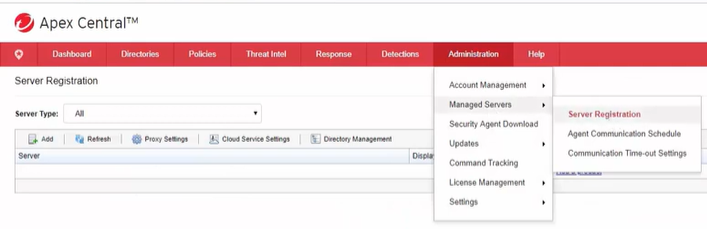

1)

2)

3) Na parte de certificação vc vai e procura nesse caminho o certificado do Apex Central(O certificado é bom para evitar ataques MITM)


4) Se deu tudo certo, na hora de testar a conexão, então vc clica em register
5) Vai para o Apex Central e veja se o apex one ta la